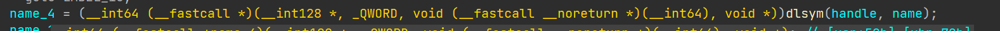
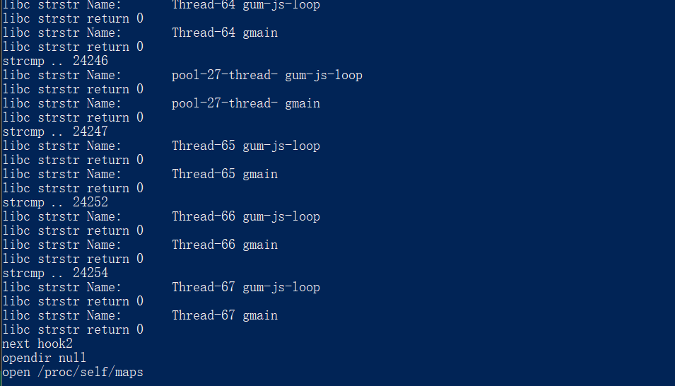

Frida 是安卓逆向分析的利器，注入检测一直是对抗的难题，学会解决这些问题才能成为一个真正的逆向工程师。
就原本的构建的 frida 而言，注入检测是十分简单的，从 /proc/self/maps ，从 /proc/self/stat ，都可以找到很多 Frida 注入特征。
我个人日常使用的魔改 Frida 是 Florida，这里感谢一下作者，使用 GitHub Action 持续构建最新的 release 。
# 运行时检测
对于 inline hook 在工作时一定会修改汇编代码，crc 快速校验 text 端是很有效的手段，但是会带来一定性能损失。有没有更好的方法检测 frida 呢？有的。
# PrettyMethod
Frida 可以同时 hook java 和 native 代码，其中的 java 代码 hook 是通过 hook libart 实现的，其中 art::ArtMethod::PrettyMethod 一定会被 frida 修改。比起 crc 校验 so 的整个 text 段，不如直接校验 PrettyMethod 的函数前几个字节，解析 PrettyMethod 汇编代码前几行，如果有 br 0x***** 类型的长跳转也说明被 frida 注入了。Frida 启动时不止这一个 native lib 被 Hook ，像 libc.so 这种库的导出函数也会存在相似的特征。
还有一种运行时检测是堆栈检查，检查函数调用的堆栈信息，如果有异常情况也可以说明被 hook 了。
# 基于 /proc 接口的检测
# 明显字符串检测
基于 /proc 的检查被大厂使用得更广泛，即使是魔改 Frida 也可以被检测出 Frida 特征，这里拿 BiliBili 的 libmsaoaidsec.so 来说吧（不只是 b 站，这个 so 被非常多的 app 使用）。
这个 so 在加载时会调用 .init_proc 的初始化函数，其中一段代码 动态解析 libc 获得 pthread_create 的地址，调用这个函数创建了三个线程，循环检测 Frida 特征，其中一个线程在遍历 /proc/self/task ，这个目录包含当前进程所有线程的运行信息，读取 /proc/self/task/tid/status 文件内容  内容包含线程名称，通过
内容包含线程名称，通过 strstr 判断线程名称是不是包含 gum-js-loop 和 gmain 来检测 frida，检测成功就会闪退。

魔改特征的 Florida 并没有通过这一检测。
不只是 status ，app 还可以检查 /proc/self/task/tid/stat /proc/self/task/tid/sched /proc/self/task/tid/comm 等多个目录下的文件内容，都可以检测出明显的 frida 的特征。
最后还有个十分容易检测的特征是 /proc/self/net/unix , 被 frida 注入时会包含如下内容
0000000000000000: 00000003 00000000 00000000 0001 03 1741108 @/frida-e254654d-8ae6-4a50-9764-e54a961a9439 |
用于通信的 frida 的 unix 域套接字。
# 分析特征的检测
重灾区还是 /proc/self/maps ，最传统的检测就是 frida-agent-64.so ，但是这个特征很容易去除。前面有谈到 libc.so 会被 Hook ，这点从 /proc/self/maps 也可以看到，权限的修改是要符合内存页的，修改字节码会导致 maps 中出现两个 xp 权限的段中间出现若干个 rwxp 权限的内存段，正常情况下 xp 的段应该是完整的并且只有一个。
检测方法很多，反检测方法其实也可以很多。
有补充或者勘误的小伙伴可以在评论区留言。